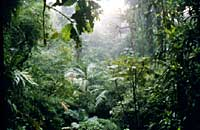
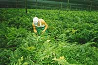
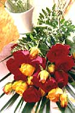

|
Based on research that we have conducted, the Rainforest Alliance is exploring new methods of conservation in several exciting areas. In our continued efforts to find creative solutions to environmental problems, we hope that these new initiatives will eventually join the ranks of our established conservation programs.
Tourism
|

Monteverde, Costa Rica
(© Karin Kreider)
|
Conservation leaders, from the presidents of major NGOs and foundations to the chiefs of Amazon tribes just entering the cash economy, recognize the potential power of tourism. Environmentally and socially sound tourism is one of very few industries that -- at least in theory -- depends on protecting rather than using natural resources. It is one of the few options that conservationists can offer to rural people who want to conserve their ecosystems.
Read the Rainforest Alliance's Tourism Position Statement.
Cut Flowers and Ferns

Fern plantation in Costa Rica
(© Ronald Sanabria)
|
|
Soaring international demand for fresh bouquets has created a new gold rush in tropical America. Lenders, governments and entrepreneurs have converged on the lucrative production of flowers and ferns for export to Europe and North America creating thousands of jobs in the tropics. However, the economic benefits associated with this growing industry have come at a cost to the environment and to worker health and safety.
| The Rainforest Alliance has embarked on a research project to bring together the different stakeholders, including the floricultural industry, governments and non-governmental agencies, in order to cooperatively find ways to reduce the negative environmental and social impacts of the cut flower and fern leaves industry in Latin America.
More on cut flower and fern leaves.
|
|

(© Jeffrey Cate)
|
Carved Wood
Carved wood products are widespread, in forms such as animal figures, statuettes, boxes, wooden screens and masks. The carved wood industry has seen tremendous recent growth, but the future of the industry depends on a sustained supply of raw material. Many of the tree species used in carving are becoming increasingly scarce. The focus of the carved wood program is to conserve forests and their biodiversity, while taking into consideration that the carved wood industry employs hundreds of thousands of people worldwide who depend on its sustainability. An objective of the carved wood program is to use market forces to help carvers and other producers achieve better management of tree species used in carving. The program will help some carvers switch from slow-growing, endangered tree species to alternative woods, that are both more plentiful and easily managed. The program will also work to help carvers develop new markets for their products among consumers who care about the environment and want to help conserve forests.
Read more about the Carved Wood Program.

About Programs in Development
Tourism | Cut Flowers and Ferns | Carved Wood
Back to Conservation Programs
Search | Site Map | Home
Contact the Rainforest Alliance: canopy@ra.org
|
|